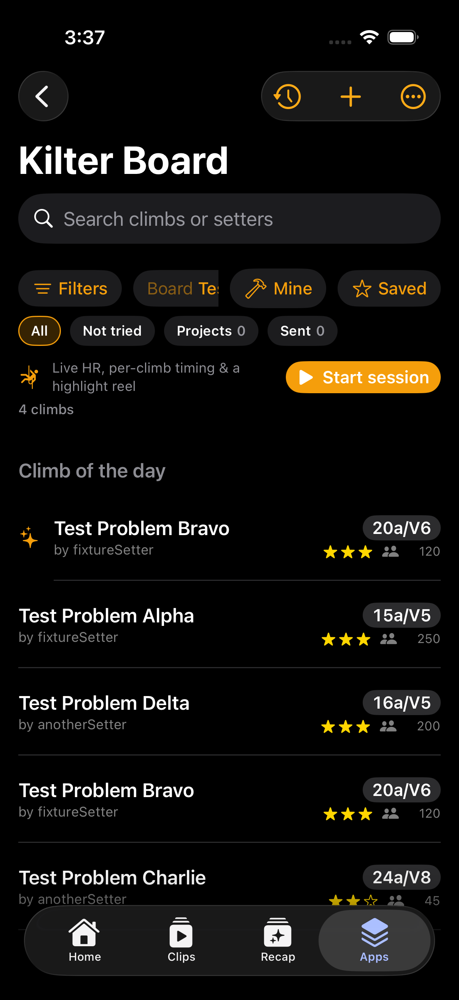

Step 3a of the design reset. Same features and filters as today, fewer bands above the first climb: one board card instead of a strip + a rail + a count bar, one quiet chip row style, calmer climb rows. Sample climbs below are placeholders for layout, not your catalog.

today’s screenshot